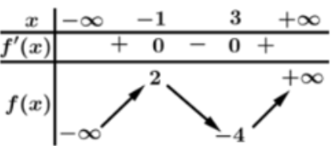
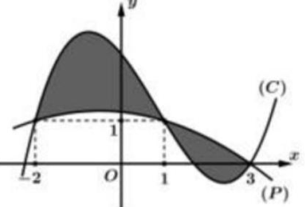
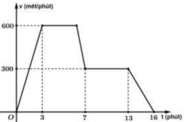
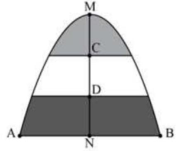

ĐỀ THI TOÁN - ĐỀ SỐ 56 HOT
Phần I: Trắc Nghiệm Nhiều Lựa Chọn
Tóm tắt kiến thức: Tính đơn điệu của hàm số
Hàm số \( f(x) \) đồng biến trên khoảng \( (a; b) \) nếu \( f'(x) \geq 0 \), nghịch biến nếu \( f'(x) \leq 0 \). Bảng biến thiên cho biết dấu của \( f'(x) \), từ đó xác định các khoảng đồng biến/nghịch biến.
Câu 1:
Cho hàm số \( y = f(x) \) có bảng biến thiên như sau:

Hàm số đã cho đồng biến trên khoảng nào dưới đây?
Chọn đáp án:
Lời giải:
Dựa vào bảng biến thiên, hàm số \( y = f(x) \) đồng biến trên các khoảng \( (-\infty; -1) \), \( (3; +\infty) \).
Đáp án: C.
Tóm tắt kiến thức: Nguyên hàm
Nguyên hàm của hàm số \( f(x) = ax + b \) là \( \int (ax + b) dx = \frac{a}{2}x^2 + bx + C \).
Câu 2:
Cho hàm số \( f(x) = 30x - 4 \). Trong các khẳng định sau, khẳng định nào đúng?
Chọn đáp án:
Lời giải:
Ta có: \( \int f(x) dx = \int (30x - 4) dx = 15x^2 - 4x + C \).
Đáp án: A.
Tóm tắt kiến thức: Phương trình lũy thừa
Để giải phương trình \( a^{f(x)} = b \), ta đưa về cùng cơ số hoặc sử dụng logarit.
Câu 3:
Nghiệm của phương trình \( 4^{2x - 1} = 64 \) là:
Chọn đáp án:
Lời giải:
Ta có: \( 4^{2x - 1} = 64 \Leftrightarrow (2^2)^{2x - 1} = 2^6 \Leftrightarrow 2^{4x - 2} = 2^6 \Leftrightarrow 4x - 2 = 6 \Leftrightarrow 4x = 8 \Leftrightarrow x = 2 \).
Đáp án: B.
Tóm tắt kiến thức: Đạo hàm của hàm logarit
Đạo hàm của hàm \( y = \log_a x \) là \( y' = \frac{1}{x \ln a} \).
Câu 4:
Với \( x > 0 \), đạo hàm của hàm số \( y = \log_2 x \) là:
Chọn đáp án:
Lời giải:
Ta có: \( y = \log_2 x \), đạo hàm là \( y' = \frac{1}{x \ln 2} \).
Đáp án: A.
Tóm tắt kiến thức: Độ dài đoạn thẳng trong không gian
Độ dài đoạn thẳng \( AB \) với \( A(x_1; y_1; z_1) \), \( B(x_2; y_2; z_2) \) là: \( AB = \sqrt{(x_2 - x_1)^2 + (y_2 - y_1)^2 + (z_2 - z_1)^2} \).
Câu 5:
Trong không gian \( Oxyz \), cho hai điểm \( A(-2; 1; -3) \) và \( B(1; 0; -2) \). Độ dài đoạn thẳng \( AB \) bằng:
Chọn đáp án:
Lời giải:
Ta có: \( \overrightarrow{AB} = (3; -1; 1) \Rightarrow AB = \sqrt{3^2 + (-1)^2 + 1^2} = \sqrt{11} \).
Đáp án: A.
Tóm tắt kiến thức: Dãy số truy hồi
Dãy số truy hồi xác định bởi công thức \( u_n = u_{n-1} + f(n) \), với giá trị ban đầu \( u_1 \).
Câu 6:
Cho dãy số \( (u_n) \) được cho bởi hệ thức truy hồi \( \begin{cases} u_1 = 5 \\ u_n = u_{n-1} + n, n \in \mathbb{N}, n \geq 2 \end{cases} \). Giá trị của \( u_3 \) là:
Chọn đáp án:
Lời giải:
Ta có: \( u_2 = u_1 + 2 = 5 + 2 = 7 \), \( u_3 = u_2 + 3 = 7 + 3 = 10 \).
Đáp án: A.
Tóm tắt kiến thức: Phương trình mặt cầu
Phương trình mặt cầu \( x^2 + y^2 + z^2 + 2ax + 2by + 2cz + d = 0 \) có bán kính \( R = \sqrt{a^2 + b^2 + c^2 - d} \).
Câu 7:
Trong không gian \( Oxyz \), cho mặt cầu \( (S): x^2 + y^2 + z^2 - 2x - 4y - 4z + 5 = 0 \). Bán kính của mặt cầu \( (S) \) là:
Chọn đáp án:
Lời giải:
Phương trình mặt cầu: \( x^2 + y^2 + z^2 - 2x - 4y - 4z + 5 = 0 \).
Bán kính: \( R = \sqrt{1^2 + 2^2 + 2^2 - 5} = \sqrt{1 + 4 + 4 - 5} = \sqrt{4} = 2 \).
Đáp án: B.
Tóm tắt kiến thức: Hình học không gian
Trong hình chóp, nếu một cạnh bên vuông góc với mặt phẳng đáy, các mặt bên chứa cạnh đó vuông góc với đáy. Quan hệ vuông góc giữa các mặt phẳng được xác định bởi vector pháp tuyến.
Câu 8:
Cho hình chóp \( S.ABCD \) có đáy là hình vuông cạnh \( a \), cạnh \( SA = a \) và vuông góc với mặt phẳng \( (ABCD) \). Khẳng định nào dưới đây sai?
Chọn đáp án:
Lời giải:
Tóm tắt kiến thức: Góc giữa hai vector
Góc giữa hai vector \( \overrightarrow{u} \) và \( \overrightarrow{v} \) được tính bởi: \( \cos \theta = \frac{\overrightarrow{u} \cdot \overrightarrow{v}}{|\overrightarrow{u}| |\overrightarrow{v}|} \).
Câu 9:
Cho hình chóp \( S.ABCD \) có đáy là hình vuông cạnh \( a \), cạnh \( SA = a \) và vuông góc với mặt phẳng \( (ABCD) \). Góc giữa hai vector \( \overrightarrow{SB} \) và \( \overrightarrow{CD} \) bằng:
Chọn đáp án:
Lời giải:
Ta có: \( (\overrightarrow{SB}, \overrightarrow{CD}) = (\overrightarrow{SB}, \overrightarrow{BA}) = \angle SBA \).
Trong tam giác \( SAB \), \( SA = AB = a \), nên \( \tan \angle SBA = \frac{SA}{AB} = \frac{a}{a} = 1 \Rightarrow \angle SBA = 45^\circ \).
Đáp án: A.
Tóm tắt kiến thức: Tính diện tích bằng tích phân
Diện tích hình phẳng giới hạn bởi hai đồ thị \( y = f(x) \), \( y = g(x) \) từ \( x = a \) đến \( x = b \): \( S = \int_a^b |f(x) - g(x)| dx \).
Câu 10:
Cho các hàm số \( y = f(x) \), \( y = g(x) \) có đồ thị lần lượt là \( (P) \) và \( (C) \) và hình phẳng được tô màu như hình vẽ:

Công thức tính diện tích hình phẳng được tô màu là:
Chọn đáp án:
Lời giải:
Diện tích hình phẳng được tô màu là: \( S = \int_{-2}^3 |f(x) - g(x)| dx = \int_{-2}^1 [g(x) - f(x)] dx - \int_1^3 [g(x) - f(x)] dx \).
Đáp án: B.
Tóm tắt kiến thức: Cực trị của hàm số
Điểm cực đại của hàm số \( y = f(x) \) xảy ra tại \( x_0 \) nếu \( f'(x_0) = 0 \) và \( f''(x_0) < 0 \).
Câu 11:
Điểm cực đại của đồ thị hàm số \( y = \frac{1}{2}x^4 - 2x^2 - 3 \) là:
Chọn đáp án:
Lời giải:
Ta có: \( y' = 2x^3 - 4x \), \( y'' = 6x^2 - 4 \).
\( y' = 0 \Rightarrow 2x(x^2 - 2) = 0 \Rightarrow x = 0, x = \pm \sqrt{2} \).
Tại \( x = 0 \), \( y''(0) = -4 < 0 \), suy ra cực đại tại \( x = 0 \), với \( y(0) = -3 \).
Đáp án: D.
Tóm tắt kiến thức: Độ lệch chuẩn
Độ lệch chuẩn của mẫu số liệu ghép nhóm:
- Trung bình: \( \bar{x} = \frac{\sum x_i n_i}{\sum n_i} \).
- Phương sai: \( S^2 = \frac{1}{n} \sum n_i (x_i - \bar{x})^2 \).
- Độ lệch chuẩn: \( S = \sqrt{S^2} \).
Câu 12:
Thời gian chạy bộ của bạn mỗi ngày trong thời gian gần đây của bạn An được thống kê lại ở bảng sau:
| Thời gian (phút) | \([20; 25)\) | \([25; 30)\) | \([30; 35)\) | \([35; 40)\) | \([40; 45)\) |
|---|---|---|---|---|---|
| Số ngày | 6 | 6 | 4 | 1 | 1 |
Độ lệch chuẩn của mẫu số liệu ghép nhóm đã cho bằng (làm tròn đến hàng phần trăm):
Chọn đáp án:
Lời giải:
Số trung bình: \( \bar{x} = \frac{6 \cdot 22,5 + 6 \cdot 27,5 + 4 \cdot 32,5 + 1 \cdot 37,5 + 1 \cdot 42,5}{6 + 6 + 4 + 1 + 1} = \frac{85}{3} \approx 28,33 \).
Phương sai: \( S^2 = \frac{6 \cdot (22,5 - \frac{85}{3})^2 + 6 \cdot (27,5 - \frac{85}{3})^2 + 4 \cdot (32,5 - \frac{85}{3})^2 + 1 \cdot (37,5 - \frac{85}{3})^2 + 1 \cdot (42,5 - \frac{85}{3})^2}{18} = 31,25 \).
Độ lệch chuẩn: \( S = \sqrt{31,25} \approx 5,59 \).
Đáp án: C.
Phần II: Trắc Nghiệm Đúng/Sai
Tóm tắt kiến thức: Hình học không gian
- Hình chiếu vuông góc của một điểm lên trục tọa độ.
- Phương trình mặt phẳng qua ba điểm.
- Vector pháp tuyến và khoảng cách từ điểm đến mặt phẳng: \( d = \frac{|ax_0 + by_0 + cz_0 + d|}{\sqrt{a^2 + b^2 + c^2}} \).
Câu 13:
Trong không gian \( Oxyz \), cho điểm \( M(1; 2; 3) \) và ba điểm \( A, B, C \) lần lượt là hình chiếu vuông góc của điểm \( M(1; 2; 3) \) lên các trục tọa độ \( Ox, Oy, Oz \). Gọi \( (P) \) là mặt phẳng đi qua ba điểm \( A, B, C \). Xét các phát biểu sau:
Chọn đáp án cho từng phát biểu:
a)
b)
c)
d)
Lời giải:
a) Đúng. Hình chiếu của \( M(1; 2; 3) \) lên \( Ox, Oy, Oz \) lần lượt là \( A(1; 0; 0) \), \( B(0; 2; 0) \), \( C(0; 0; 3) \).
b) Sai. Phương trình mặt phẳng qua \( A, B, C \): \( \frac{x}{1} + \frac{y}{2} + \frac{z}{3} = 1 \Leftrightarrow 6x + 3y + 2z - 6 = 0 \).
c) Sai. Vector pháp tuyến: \( \overrightarrow{n}(6; 3; 2) \), không phải \( (1; 2; 3) \).
d) Sai. Khoảng cách: \( d(O, (P)) = \frac{|-6|}{\sqrt{6^2 + 3^2 + 2^2}} = \frac{6}{7} \neq \frac{4}{7} \).
Đáp án: a) Đúng, b) Sai, c) Sai, d) Sai.
Tóm tắt kiến thức: Xác suất
- Xác suất toàn phần: \( P(A) = P(B)P(A|B) + P(\overline{B})P(A|\overline{B}) \).
- Công thức Bayes: \( P(B|A) = \frac{P(B)P(A|B)}{P(A)} \).
Câu 14:
Khi phát hiện một vật thể bay, xác suất một hệ thống radar phát cảnh báo là 0,9 nếu vật thể bay đó là mục tiêu thật và là 0,05 nếu đó là mục tiêu giả. Thống kê cho thấy có 99% các vật thể bay là mục tiêu giả. Gọi \( A \) là sự kiện: Hệ thống radar đang phát cảnh báo khi phát hiện một vật thể bay. Gọi \( B \) là sự kiện: Vật thể đó là mục tiêu thật. Xét các phát biểu sau:
Chọn đáp án cho từng phát biểu:
a)
b)
c)
d)
Lời giải:
a) Sai. \( P(\overline{B}) = 0,99 \Rightarrow P(B) = 1 - 0,99 = 0,01 \).
b) Đúng. \( P(A|B) = 0,9 \) (theo đề).
c) Sai. \( P(A) = P(B)P(A|B) + P(\overline{B})P(A|\overline{B}) = 0,01 \cdot 0,9 + 0,99 \cdot 0,05 = 0,0585 = 5,85\% \).
d) Đúng. \( P(B|A) = \frac{P(B)P(A|B)}{P(A)} = \frac{0,01 \cdot 0,9}{0,0585} \approx 0,15 \).
Đáp án: a) Sai, b) Đúng, c) Sai, d) Đúng.
Tóm tắt kiến thức: Tối ưu hóa
Tìm cực đại của hàm số \( f(x) \): Lấy \( f'(x) = 0 \), kiểm tra \( f''(x) < 0 \) hoặc bảng biến thiên.
Câu 15:
Một mô hình quan trọng cho nghề cá thương mại là mô hình của Beverton và Holt. Nó bắt đầu bằng việc nghiên cứu một nhóm cá duy nhất, nghĩa là tất cả các con cá trong nghiên cứu đều được sinh ra cùng một thời điểm: \( N = 1000 e^{-0,1t} \) và trọng lượng \( w(t) \) của mỗi con cá được đưa ra bởi công thức \( w = 5 \left(1 - 0,9 e^{-0,1t}\right)^3 \) (kg), \( t \) là thời gian, tính theo năm là tuổi của cá. Gọi \( B(t) \) là tổng trọng lượng của nhóm cá này sau \( t \) năm. Xét các phát biểu sau:

Chọn đáp án cho từng phát biểu:
a)
b)
c)
d)
Lời giải:
a) Sai. \( w(0) = 5 \left(1 - 0,9 e^0\right)^3 = 5 \cdot (0,1)^3 = 0,005 \, \text{kg} = 5 \, \text{g} \neq 50 \, \text{g} \).
b) Đúng. \( B(t) = N(t) \cdot w(t) = 1000 e^{-0,1t} \cdot 5 \left(1 - 0,9 e^{-0,1t}\right)^3 = 5000 e^{-0,1t} \cdot \left(1 - 0,9 e^{-0,1t}\right)^3 \).
c) Sai. Đặt \( a = e^{-0,1t} \), \( B = 5000 a (1 - 0,9a)^3 \). Tìm cực đại: \( B' = 5000 (1 - 0,9a)^2 (1 - 3,6a) = 0 \Rightarrow a = \frac{5}{18} \). Tại \( a = \frac{5}{18} \), \( B = \frac{9375}{16} \approx 586 \, \text{kg} \neq 347 \, \text{kg} \).
d) Đúng. \( a = \frac{5}{18} \Rightarrow e^{-0,1t} = \frac{5}{18} \Rightarrow t = -10 \ln \frac{5}{18} \approx 12,8 \, \text{năm} \).
Đáp án: a) Sai, b) Đúng, c) Sai, d) Đúng.
Tóm tắt kiến thức: Chuyển động có gia tốc
- Vận tốc: \( v(t) = at + b \).
- Quãng đường: \( s = \int v(t) dt \).
- Vận tốc trung bình: \( v_{tb} = \frac{s}{t} \).
Câu 16:
Một cô gái đi xe máy khởi hành từ trạng thái nghỉ, tăng tốc đều trong 3 phút cho đến khi đạt tốc độ 36 km/h. Sau đó, cô ấy duy trì tốc độ này không đổi trong vòng 4 phút cho đến khi đến một ngọn đồi. Cô ấy giảm tốc độ đều trong một phút xuống còn 18 km/h, sau đó tiếp tục giảm tốc đều đến khi dừng lại. Xét các phát biểu sau:

Chọn đáp án cho từng phát biểu:
a)
b)
c)
d)
Lời giải:
Đổi: \( 36 \, \text{km/h} = 600 \, \text{m/phút} \), \( 18 \, \text{km/h} = 300 \, \text{m/phút} \).
a) Sai. Tốc độ từ phút 4 đến phút 7 là không đổi, nhưng hình vẽ cho thấy giảm tại \( t = 7 \).
b) Sai. Tại \( t = 14 \), \( v(14) = 300 \, \text{m/phút} \neq 220 \, \text{m/phút} \).
c) Đúng. Từ phút 15 đến 17: \( v(t) = -100t + 1700 \), quãng đường \( \int_{15}^{17} (-100t + 1700) dt = 200 \, \text{m} \).
d) Sai. Quãng đường 14 phút: \( \frac{1}{2} \cdot 3 \cdot 600 + 4 \cdot 600 + 1 \cdot 300 + \frac{1}{2} \cdot 1 \cdot 300 + 6 \cdot 300 = 5550 \, \text{m} \).
Vận tốc trung bình: \( \frac{5550}{14} \approx 396,43 \, \text{m/phút} \approx 24 \, \text{km/h} \neq 22 \, \text{km/h} \).
Đáp án: a) Sai, b) Sai, c) Đúng, d) Sai.
Phần III: Trắc Nghiệm Trả Lời Ngắn
Tóm tắt kiến thức: Góc trong hình học không gian
Góc giữa đường thẳng và mặt phẳng được xác định bởi sin của góc giữa đường thẳng và hình chiếu của nó lên mặt phẳng.
Câu 17:
Cho hình chóp \( S.ABCD \) có đáy \( ABCD \) là hình thoi cạnh bằng 2, \( AC = 2 \). Hình chiếu của \( S \) trên mặt phẳng đáy trùng với trung điểm \( H \) của cạnh \( AB \). Khi \( SA = 3 \), thì sin của góc giữa đường thẳng \( SD \) và mặt phẳng \( (ABCD) \) bằng bao nhiêu? (Làm tròn kết quả đến hàng phần mười).
Nhập đáp án:
Lời giải:
\( AH = 1 \), \( SH = \sqrt{SA^2 - AH^2} = \sqrt{3^2 - 1^2} = 2\sqrt{2} \).
Tam giác \( ACD \) đều (vì \( AC = AD = CD = 2 \)). Góc \( \angle HAD = 120^\circ \).
\( \cos \angle HAD = \frac{HA^2 + AD^2 - HD^2}{2 \cdot HA \cdot AD} = \frac{1^2 + 2^2 - HD^2}{2 \cdot 1 \cdot 2} = -\frac{1}{2} \Rightarrow HD = \sqrt{7} \).
\( \tan \angle SDH = \frac{SH}{HD} = \frac{2\sqrt{2}}{\sqrt{7}} \). Suy ra: \( \sin^2 \angle SDH = \frac{8}{15} \Rightarrow \sin \angle SDH = \frac{2\sqrt{30}}{15} \approx 0,7 \).
Đáp án: 0,7.
Tóm tắt kiến thức: Tổ hợp và xác suất
Số cách chọn \( k \) phần tử từ \( n \) phần tử: \( C_n^k = \frac{n!}{k!(n-k)!} \).
Câu 18:
Trong một đề thi trắc nghiệm môn Toán có loại câu hỏi trả lời đúng sai. Một câu hỏi có 4 ý, mỗi ý học sinh chỉ cần trả lời đúng hoặc sai. Nếu 1 ý trả lời đúng được 0,1 điểm, đúng 2 ý được 0,25 điểm, đúng 3 ý được 0,5 điểm và đúng cả 4 ý được 1 điểm. Giả sử một thí sinh làm bài bằng cách chọn phương án ngẫu nhiên để trả lời cho 2 câu hỏi loại đúng sai này. Vậy có bao nhiêu cách chọn phương án để học sinh đó được đúng 1 điểm ở phần trả lời 2 câu hỏi này?
Nhập đáp án:
Lời giải:
Để được 1 điểm, có hai trường hợp:
- TH1: Đúng cả 4 ý của 1 câu và sai cả 4 ý của câu còn lại (hoặc ngược lại): \( 2 \cdot C_4^4 \cdot C_4^0 = 2 \cdot 1 \cdot 1 = 2 \).
- TH2: Mỗi câu đúng 3 ý và sai 1 ý: \( C_4^3 \cdot C_4^3 = 4 \cdot 4 = 16 \).
Tổng số cách: \( 2 + 16 = 18 \).
Đáp án: 18.
Tóm tắt kiến thức: Tích phân và diện tích
Diện tích hình phẳng giới hạn bởi parabol và đường thẳng được tính bằng tích phân: \( S = \int_a^b |f(x) - g(x)| dx \).
Câu 19:
Một khung cửa kính hình parabol với đỉnh \( M \) và cạnh đáy \( AB \) (minh họa ở hình bên):

Biết chi phí để lắp phần kính màu (phần tô đậm trong hình) là 200000 đồng/m² và phần kính trắng còn lại là 150000 đồng/m². Cho \( MN = AB = 4 \, \text{m} \) và \( MC = CD = DN \). Hỏi số tiền để lắp kính cho khung cửa như trên bằng bao nhiêu triệu đồng? (Làm tròn kết quả đến hàng phần mười).
Nhập đáp án:
Lời giải:
\( MC = CD = DN = \frac{MN}{3} = \frac{4}{3} \), \( AN = BN = \frac{AB}{2} = 2 \).
Đặt gốc tại \( N \): \( M(0; 4) \), \( A(-2; 0) \), \( B(2; 0) \).
Parabol: \( y = -x^2 + 4 \).
Diện tích toàn phần: \( S = \int_{-2}^2 (-x^2 + 4) dx = \frac{32}{3} \).
Diện tích phần màu: \( S_1 = \int_{-\frac{2\sqrt{3}}{3}}^{\frac{2\sqrt{3}}{3}} \left( (-x^2 + 4) - \frac{8}{3} \right) dx \).
Diện tích phần trắng: \( S_2 = \int_{-\frac{2\sqrt{6}}{3}}^{\frac{2\sqrt{6}}{3}} \left( (-x^2 + 4) - \frac{4}{3} \right) dx \).
Tổng chi phí: \( T = 200S_1 + 150(S_2 - S_1) + 200(S - S_2) \approx 1946 \, \text{nghìn đồng} \approx 1,9 \, \text{triệu đồng} \).
Đáp án: 1,9.
Tóm tắt kiến thức: Xác suất có điều kiện
Độ nhạy của xét nghiệm: \( P(A|B) \), tính bằng công thức Bayes: \( P(A|B) = \frac{P(A \cap B)}{P(B)} \).
Câu 20:
Một người nghi ngờ bị bệnh \( B \), với xác suất \( P(B) = 0,3 \); cho người này làm xét nghiệm \( A \). Xét nghiệm \( A \) sẽ trả về hoặc dương tính, hoặc âm tính. Thống kê cho thấy, trong số những người có xét nghiệm dương tính chỉ có 80% là bị bệnh \( B \), còn trong số những người âm tính thì có 90% không bị bệnh này. Tính độ nhạy của xét nghiệm \( A \). Kết quả làm tròn đến hàng phần trăm.
Nhập đáp án:
Lời giải:
Gọi \( A \): Xét nghiệm dương tính. \( B \): Bị bệnh \( B \).
Đề cho: \( P(B) = 0,3 \), \( P(B|A) = 0,8 \), \( P(\overline{B}|\overline{A}) = 0,9 \Rightarrow P(B|\overline{A}) = 0,1 \).
Gọi \( P(A) = x \). Theo công thức xác suất toàn phần: \( P(B) = P(B|A)P(A) + P(B|\overline{A})P(\overline{A}) \).
\( 0,3 = 0,8x + 0,1(1 - x) \Rightarrow x = \frac{2}{7} \).
Độ nhạy: \( P(A|B) = \frac{P(B|A)P(A)}{P(B)} = \frac{0,8 \cdot \frac{2}{7}}{0,3} \approx 0,76 \).
Đáp án: 0,76.
Tóm tắt kiến thức: Khoảng cách trên mặt cầu
Khoảng cách giữa hai điểm trên mặt cầu được tính qua góc giữa hai vector chỉ phương: \( \cos \theta = \frac{\overrightarrow{u} \cdot \overrightarrow{v}}{|\overrightarrow{u}| |\overrightarrow{v}|} \), quãng đường là \( R \cdot \theta \).
Câu 21:
Giả định rằng Trái Đất là một hình cầu hoàn hảo với bán kính \( R = 6371 \, \text{km} \), trong không gian \( Oxyz \), với \( O \) là tâm Trái Đất. Biết rằng trạm phát sóng trên mặt đất được đặt ở vị trí \( 10^\circ N, 20^\circ W \) và một máy thu được đặt tại vị trí \( 80^\circ N, 70^\circ W \). Khoảng cách giữa trạm phát sóng và trạm thu trên mặt đất bằng bao nhiêu km? (Viết kết quả làm tròn đến hàng đơn vị).
Nhập đáp án:
Lời giải:
Trạm phát sóng \( P(\cos 10^\circ \cos 20^\circ; -\cos 10^\circ \sin 20^\circ; \sin 10^\circ) \), máy thu \( Q(\cos 80^\circ \cos 70^\circ; -\cos 80^\circ \sin 70^\circ; \sin 80^\circ) \).
\( \overrightarrow{OP} \cdot \overrightarrow{OQ} = \cos 10^\circ \cos 20^\circ \cos 80^\circ \cos 70^\circ + \cos 10^\circ \sin 20^\circ \cos 80^\circ \sin 70^\circ + \sin 10^\circ \sin 80^\circ \approx 0,2809332269 \).
Góc \( \angle POQ \approx 73,6861^\circ \).
Khoảng cách: \( \frac{73,6861}{360} \cdot 2\pi \cdot 6371 \approx 8193 \, \text{km} \).
Đáp án: 8193.
Tóm tắt kiến thức: Tối ưu hóa
Tìm giá trị nhỏ nhất của hàm số \( f(x) \): Lấy \( f'(x) = 0 \), kiểm tra \( f''(x) > 0 \) hoặc sử dụng bất đẳng thức AM-GM.
Câu 22:
Chi phí nhiên liệu của một chiếc tàu chạy trên sông được chia làm hai phần. Phần thứ nhất không phụ thuộc vào vận tốc và có chi phí mỗi giờ 480 nghìn đồng. Chi phí mỗi giờ của phần thứ hai tỉ lệ thuận với lũy thừa ba của vận tốc. Khi tàu di chuyển với vận tốc 10 km/h thì tổng chi phí cho mỗi kilômét của tàu bằng 51 nghìn đồng. Hỏi tàu phải di chuyển với vận tốc bằng bao nhiêu km/h để tổng chi phí nhiên liệu trên mỗi kilômét là nhỏ nhất?
Nhập đáp án:
Lời giải:
Gọi \( x \, \text{(km/h)} \) là vận tốc. Chi phí phần 1: \( C_1 = 480 \cdot \frac{1}{x} \).
Chi phí phần 2: \( C_2 = k x^3 \cdot \frac{1}{x} = k x^2 \).
Tổng chi phí: \( C = \frac{480}{x} + k x^2 \).
Tại \( x = 10 \): \( \frac{480}{10} + k \cdot 10^2 = 51 \Rightarrow k = 0,03 \).
\( C = \frac{480}{x} + 0,03 x^2 \).
Sử dụng AM-GM: \( C = \frac{240}{x} + \frac{240}{x} + 0,03 x^2 \geq 3 \sqrt[3]{\frac{240}{x} \cdot \frac{240}{x} \cdot 0,03 x^2} = 36 \).
Đẳng thức xảy ra khi \( \frac{240}{x} = 0,03 x^2 \Rightarrow x^3 = 8000 \Rightarrow x = 20 \).
Đáp án: 20.